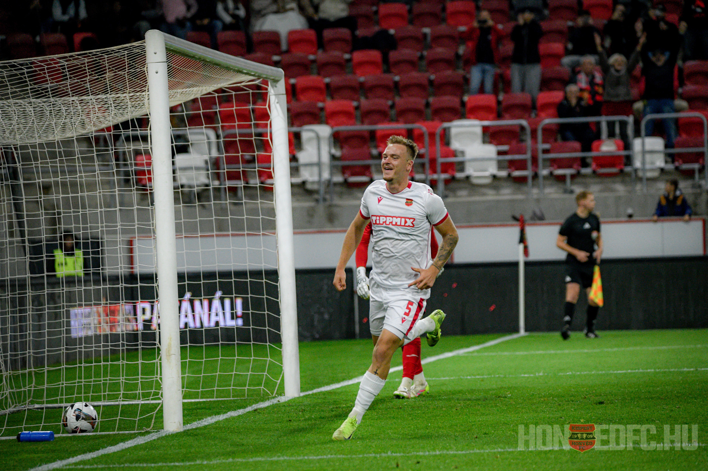

A székesfehérvári születésű Csontos felnőtt karrierjét megelőzően a Videoton, a Főnix Gold és a Ferencváros csapatában is játszott, 2019 novemberében alig 17 évesen a zöld-fehérek színeiben pedig be is mutatkozhatott az élvonalban a Debreceni VSC ellen.
Ebben az idényben még egyszer kapott szerepet Szerhij Rebrovtól, mégpedig szülővárosában, Fehérváron. Egy idénnyel később a Budafok ellen csereként beállva gólt is szerzett az élvonalban, majd kölcsönben Soroksárra került.
A védelemben és a középpályán is több poszton bevethető játékos a 2022-23-as idényt még Soroksáron kezdte, a telet viszont Győrben folytatta, amelynek alapembereként egy szezonra rá feljutást ünnepelhetett, 28 bajnoki meccsen 3 gólt jegyzett.
A következő kiírásban Győrben még négy mérkőzésen futballozott – amelyeken egyaránt a kezdőcsapat tagja volt – elvitte a ZTE, de a kék-fehéreknél nem lépett pályára a védő.
Kispesten megtalálta számításait a fiatal védő, kiváló védőmunkája mellett, a támadásokat is gyakran segíti, indításai, beadásai és pontrugásai egyaránt veszélyesek. Emelett Csontos egy kíméletlen ítélet végrehajtó, hisz a Honvéd büntetőit rendre belővi.
